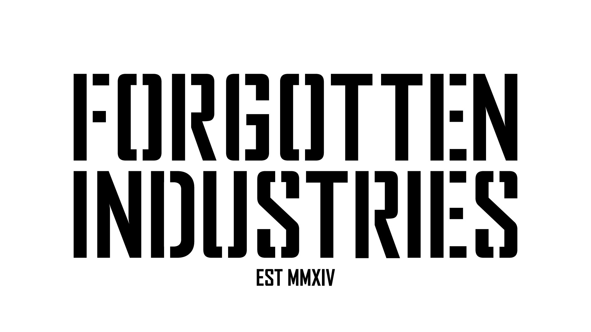

Archive
Home
Entries
Top-Level Categories
- Restoration Logs - placeholder: Mercury S8 bench return.
- Field Notes - placeholder: photograph before cleaning.
- Project Dossiers - placeholder: PEREGRINE aircraft dossier.
- Essays - placeholder: Perspective, Peregrine, and Pang.
- Technical References - placeholder: CaseLabs parts and loop notes.
Shelves
Machine-Readable Archive